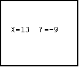
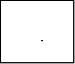

| HOME >> Tutorials >> Tutorial 22: Moving Objects |
Introduction:
Obviously by the subtitle of this tutorial, we will be using getKey and the arrows to move objects on the screen. This is very useful for RPG games or racing games where you want the user to be able to move the person or the car around on the screen.
The Codes:
This first code is more of simulating motion on the screen. In this code, we won't be actually moving an object, but using the arrow keys and coordinates (x,y) to imagine an object moving. It will also have a key that you can press to quit the program.
| : | For AShell, SOS, and TI-Explorer |
| 10 |
Sets the initial coordinates at (10,10) |
| ClrHome | Clears the home screen |
| Lbl 1 | |
| While 1 | |
| getKey |
Stores the key's key code into user variable G |
| If G=24:Then | If is pressed, then |
| X-1 |
Decrease X by one |
| Goto 2 | Goto Label 2 |
| End | End If statement |
| If G=25:Then | If is pressed, then |
| Y+1 |
Increase Y by one |
| Goto 2 | Goto Label 2 |
| End | End If statement |
| If G=26:Then | If is pressed, then |
| X+1 |
Increase X by one |
| Goto 2 | Goto Label 2 |
| End | End If statement |
| If G=34:Then | If is pressed, then |
| Y-1 |
Decrease Y by one |
| Goto 2 | Goto Label 2 |
| End | End If statement |
| If G=22:Stop | If |
| End | End initial While loop |
| Lbl 2 | |
| ClrHome | Clears the home screen |
| Output(4,3,"X= Y= | Displays "X= Y=" (four spaces in between) |
| Output(4,5,X | Displays the X-coordinate |
| Output(4,11,Y | Displays the Y-coordinate |
| Goto 1 | Go to Label 1 |
Possible output:

This code is probably three to four times bigger than what I had planned. Originally, I just had the each entire If statement on one line saying something like "If G=34:Y-1 Y", and that was it. That didn't work because I also needed a Goto for it to display the new coordinates. When you first run the program, the screen is blank. The coordinates do not appear until you have pressed one of the arrow keys. In this program, you have to envision an object move left, right, up, and down. However, in the next program, I'll show you how to make a 2x2 pixel box move around, so we'll be working on the graph screen. The code should be similar to the code above, but longer.
Y", and that was it. That didn't work because I also needed a Goto for it to display the new coordinates. When you first run the program, the screen is blank. The coordinates do not appear until you have pressed one of the arrow keys. In this program, you have to envision an object move left, right, up, and down. However, in the next program, I'll show you how to make a 2x2 pixel box move around, so we'll be working on the graph screen. The code should be similar to the code above, but longer.
Version 3.0 Update:
While looking at Wade Peterson's Advanced BASIC for the TI-83 tutorial, I saw a better way to check which key was pressed using getKey. The way I used above, using If-Then statements, it's not the best way to check at all. It takes up too much space. In Wade's tutorial he showed a better way. This way uses the equals sign (=) in a way that I didn't know it could be used. I'll show you how it is used in the next code. You should easily tell the difference.
| : | For AShell, SOS, and TI-Explorer |
| 47 |
Sets the initial coordinates at (10,10) |
| ClrDraw | Clears the graph screen |
| ClrHome | Clears the home screen |
| AxesOff | Turns the graph axes off |
| FnOff | Deselects all the Y= functions |
| Lbl 1 | |
| While 1 | |
| getKey |
Stores the key's key code into user variable G |
| A+(G=26)-(G=24) |
If is pressed increase A by 1 or if is pressed decrease A by 1 |
| B+(G=34)-(G=25) |
If is pressed increase B by 1 or if is pressed decrease B by 1 |
| If G=22:Then | If |
| ClrHome | Clear the home screen |
| Stop | End program execution |
| End | End If statement |
| Goto 2 | Goto Label 2 |
| End | End initial While loop |
| Lbl 2 | |
| If A<1:Then | If you go too far to the left, |
| 47 |
it puts box in original position |
| End | End If statement |
| If A>92:Then | If you go too far to the right, |
| 47 |
it puts box in original position |
| End | End If statement |
| If B>60:Then | If you go too far to down, |
| 47 |
it puts box in original position |
| End | End If statement |
| If B<1:Then | If you go too far to up, |
| 47 |
it puts box in original position |
| End | End If statement |
| ClrDraw | Clears the graph screen |
| Pxl-On(B,A | This line and the next three lines |
| Pxl-On(B,A+1 | display a box using pixels with the |
| Pxl-On(B+1,A | top-left corner of the box at |
| Pxl-On(B+1,A+1 | row = B and column = A |
| Goto 1 | Go to Label 1 |
Possible output:

I'm sure you caught the big difference in how we checked which key was pressed. Instead of using 16 lines of code to check which key was pressed, we used only three. Going from 16 lines to 3 lines will really reduce the size of your programs. If I can just explain how the equal sign and all of the other relational operators work. If you use these relational operators without If statements or While and Repeat loops, they return a 1 if the test is true or 0 if the test is false. So if you had something like: 25=26, it would return a 0. If the value of B was 16 and you had something like: B=16, then it would return a 1. The same works for the others. So when we have "A+(G=26)-(G=24) A" the reason it works is because of the equals sign. If was pressed, that means that G would equal 26 because "getKey
A" the reason it works is because of the equals sign. If was pressed, that means that G would equal 26 because "getKey G." Let's say that A is 34. If you evaluate that equation it would look like: 34+(1)-(0), which equals 35. Since G isn't 24, "G=24" is false so it returns a zero. was pressed and A increased by 1 just like we wanted it to. Whichever key press number you want to make the variable increase, you put after the plus sign. Whichever you want to decrease, you put after the minus sign. If we wanted the 2x2 block to move 3 spaces at a time, instead of 1, we'd only have to make a slight change. We would change the command line that we originally had to "A+3(G=26)-3(G=24)
G." Let's say that A is 34. If you evaluate that equation it would look like: 34+(1)-(0), which equals 35. Since G isn't 24, "G=24" is false so it returns a zero. was pressed and A increased by 1 just like we wanted it to. Whichever key press number you want to make the variable increase, you put after the plus sign. Whichever you want to decrease, you put after the minus sign. If we wanted the 2x2 block to move 3 spaces at a time, instead of 1, we'd only have to make a slight change. We would change the command line that we originally had to "A+3(G=26)-3(G=24) A." While this construction is really a space-saver, you can only use it in this case when you're moving something up, down, right, or left. You could also use it in situations where you want to decrease or increase a variable because of a keypress. You can't use this construction when you want to do something else using getKey.
A." While this construction is really a space-saver, you can only use it in this case when you're moving something up, down, right, or left. You could also use it in situations where you want to decrease or increase a variable because of a keypress. You can't use this construction when you want to do something else using getKey.
Further Explanation:
Technically, you should be able to comprehend the entire code, but there maybe a couple of things that you might want cleared up. First off, what you should have noticed right away is that I changed all the X's to A's and all the Y's to B's. I did this because, for some reason, the user variable Y does not work well with Pxl-On(. After the first Pxl-On(, the value for Y would go to 0, and the other three Pxl-Ons were in the wrong place. I do not have an explanation for why this happens, but I know it does so I just use different variables. The next topic I want to explain might be harder to spot, but did you notice that I switched what happens when you press and ? Before when was pressed, Y was increased, because as you go up on the coordinate plane, the Y values increase. However, in the row,column method, as the box goes up, the row values decrease. The same goes for when you press , except vice versa. You also may have notice that I changed the If statement that stops the program (when  is pressed) to and If-Then statement. I did this because if you just leave it as an If statement, the program ends with the graph screen still on and the box in the same place. The user might not know that the program is over and try to press the arrow keys again. With it as an If-Then statement, it goes back to the home screen because of the "ClrHome" command. Finally, the things that I really added to this program were the If-Then statements at the end. These statements prevent the user from making the box go off the screen. You may be thinking, "hey...what's wrong with that?" What's wrong is that the calculator will give you an ERR:BOUND because it cannot display pixels in negative values. If we had used Pt-On( instead of Pxl-On(, we would not have had to worry about getting that error, but I wanted to show you how to set boundaries.
is pressed) to and If-Then statement. I did this because if you just leave it as an If statement, the program ends with the graph screen still on and the box in the same place. The user might not know that the program is over and try to press the arrow keys again. With it as an If-Then statement, it goes back to the home screen because of the "ClrHome" command. Finally, the things that I really added to this program were the If-Then statements at the end. These statements prevent the user from making the box go off the screen. You may be thinking, "hey...what's wrong with that?" What's wrong is that the calculator will give you an ERR:BOUND because it cannot display pixels in negative values. If we had used Pt-On( instead of Pxl-On(, we would not have had to worry about getting that error, but I wanted to show you how to set boundaries.
Conclusion:
We have finished two-thirds of the getKey tutorials, and we have only one tutorial left in the entire version 2.0. In this last tutorial of version 2.0, I will show you how to make what I call, "user-created" menus. These menus are far more creative and better looking than the drab menus you get by using the Menu( command. You should now begin to see the real importance of getKey because it allows you to do so much and be very creative.
If you do not understand a particular part in this lesson, have suggestions, or find any problems please contact me.
 |
 |
| Tutorial 21 | Special Tutorial |